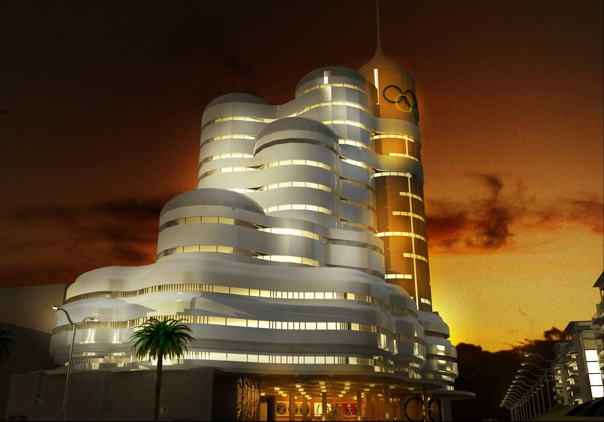

Olympic Plaza Tower, Maadi
Mixed-use development · Maadi, Cairo, Egypt
Architectural design of a mixed-use commercial, recreational and business tower on a 2,500 m2 plot owned by the Egyptian Olympic Committee in Maadi.
Partners
PUD
Client
Egyptian Olympic Committee
More from Cairo
 Downtown Cairo RegenerationCairo · 2012
Downtown Cairo RegenerationCairo · 2012 Rotana Offices and Studios, Nile PlazaGarden City, Cairo · 2005
Rotana Offices and Studios, Nile PlazaGarden City, Cairo · 2005 Organ Transplant Centre, Nasser Institute for Research and TreatmentGreater Cairo
Organ Transplant Centre, Nasser Institute for Research and TreatmentGreater Cairo Sumou Boulevard, New CairoMostakbal City, New Cairo · 2026
Sumou Boulevard, New CairoMostakbal City, New Cairo · 2026 Al Alamein Riviera Vision Master PlanNorth Coast (New Alamein) · 2022
Al Alamein Riviera Vision Master PlanNorth Coast (New Alamein) · 2022 Gargoub New Port CityGargoub, Matrouh · 2021
Gargoub New Port CityGargoub, Matrouh · 2021